청소년상담사-2급(2교시) (2018-10-06 기출문제)
1과목: 진로상담
1. 상담자의 활동과 진로상담의 목표가 바르게 연결된 것은?
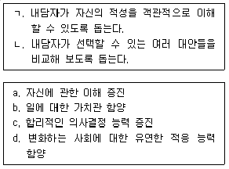
- ㄱ- a, ㄴ- b
- ㄱ- a, ㄴ- c
- ㄱ- b, ㄴ- a
- ㄱ- b, ㄴ- c
- ㄱ- c, ㄴ- d
(정답률: 42%)

2. 샘슨 등(J. Sampson et al.)이 제시한 내담자 분류체계의 기준과 그에 따른 영주의 유형이 옳게 연결된 것은?
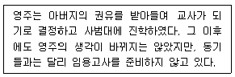
- 문제의 원인 - 내적 갈등
- 문제의 원인 - 의존성
- 호소영역 - 진로미결정자(the undecided)
- 진로의사결정 정도 - 희망과 현실의 괴리
- 진로의사결정 정도 - 진로결정자(the decided)
(정답률: 알수없음)
3. 하렌(V. Harren)이 설명한 직관적 유형의 특징으로 옳은 것을 모두 고른 것은?
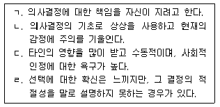
- ㄱ, ㄴ
- ㄱ, ㄷ
- ㄷ, ㄹ
- ㄱ, ㄴ, ㄹ
- ㄱ, ㄴ, ㄷ, ㄹ
(정답률: 43%)
4. 수퍼(D. Super)의 진로발달 아치웨이 모형에서 자기개념 형성에 영향을 미치는 환경적 요인에 해당하지 않는 것은?
- 가족
- 문화
- 학교
- 또래집단
- 노동시장
(정답률: 10%)
5. 긴즈버그(E. Ginzberg)의 진로발달이론에 관한 설명으로 옳지 않은 것은?
- 진로발달은 인간발달의 한 측면이다.
- 진로발달은 환상기, 확립기, 현실기의 단계를 거친다.
- 진로선택은 한 번에 끝나는 의사결정이 아니라 일종의 발달과정이다.
- 환상기에는 객관적이고 합리적인 정보에 근거하기보다는 상상 속에서 일과 관련된 역할을 인식한다.
- 진로선택은 개인의 주관적 요소와 현실적 가능성간의 타협에 의해 이루어진다.
(정답률: 42%)
6. 다위스와 롭퀴스트(Dawis & Lofquist)가 제시한 적응양식의 설명과 개념을 바르게 연결한 것은?
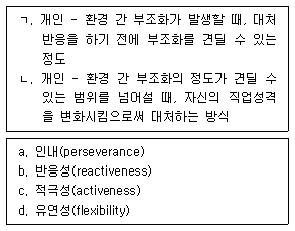
- ㄱ- a, ㄴ- b
- ㄱ- a, ㄴ- c
- ㄱ- b, ㄴ- d
- ㄱ- d, ㄴ- b
- ㄱ- d, ㄴ- c
(정답률: 알수없음)
7. 굿맨 등(J. Goodman et al.)이 제시한 진로전환 모델에서 다음에 해당하는 단계는?
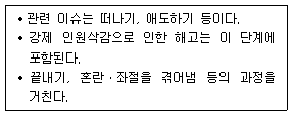
- 입직 단계
- 승진 단계
- 퇴사 단계
- 갈등 단계
- 재취업을 위한 노력 단계
(정답률: 43%)
8. 갓프레드슨(L. Gottfredson)의 제한타협이론에서 다음에 해당하는 단계는?
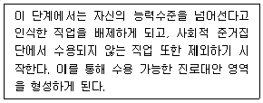
- 전환 단계
- 성역할 지향 단계
- 규모와 힘 지향 단계
- 사회적 가치 지향 단계
- 내적이며 고유한 자기 지향 단계
(정답률: 28%)
9. 로(A. Roe)의 욕구이론에 관한 설명으로 옳지 않은 것은?
- 직업은 인간의 욕구 충족과 관련된다.
- 부모의 양육태도는 자녀의 직업선택에 영향을 미친다.
- 정서집중형 부모는 과보호나 과요구의 형태를 보인다.
- 회피형 부모는 자식을 수용하지만, 밀착되어 있지는 않다.
- 부모와 따뜻한 관계에서 성장한 사람은 인간지향적인 직업을 선택하는 경향이 있다.
(정답률: 27%)
10. 수퍼(D. Super)의 생애진로무지개 모형에서 제시한 생애 역할로 옳은 것을 모두 고른 것은?
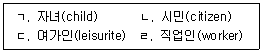
- ㄱ, ㄴ
- ㄴ, ㄷ
- ㄱ, ㄴ, ㄷ
- ㄱ, ㄷ, ㄹ
- ㄱ, ㄴ, ㄷ, ㄹ
(정답률: 43%)
11. 보딘(E. Bordin)이 제시한 내담자의 문제영역으로 옳은 것을 모두 고른 것은?
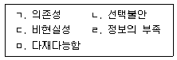
- ㄱ, ㄴ, ㄹ
- ㄱ, ㄷ, ㄹ
- ㄴ, ㄷ, ㅁ
- ㄱ, ㄴ, ㄷ, ㄹ
- ㄴ, ㄷ, ㄹ, ㅁ
(정답률: 37%)
12. 사회학적 진로이론에 관한 설명으로 옳은 것을 모두 고른 것은?
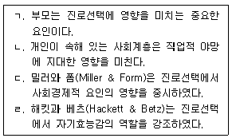
- ㄱ
- ㄴ, ㄷ
- ㄱ, ㄴ, ㄷ
- ㄴ, ㄷ, ㄹ
- ㄱ, ㄴ, ㄷ, ㄹ
(정답률: 알수없음)
13. 구성주의 진로이론에서 다음이 설명하고 있는 개념은?
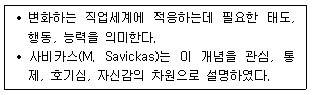
- 생애주제(life theme)
- 진로적응도(career adaptability)
- 직업적 성격(vocational personality)
- 진로정체성(career identity)
- 진로낙관성(career optimism)
(정답률: 47%)
14. 사회인지 진로이론에서 제시한 모형에 관한 설명으로 옳지 않은 것은?
- 선택모형에서 환경적 배경은 학습경험에 영향을 준다.
- 선택모형에서 자기효능감은 목표의 선택에 직ㆍ간접적으로 영향을 준다.
- 흥미발달모형에서 흥미는 자기효능감과 결과기대에 직접적으로 영향을 준다.
- 수행모형에서 능력/과거수행은 성취수준에 직ㆍ간접적으로 영향을 준다.
- 수행모형에서 결과기대는 수행목표를 통해 성취수준에 영향을 준다.
(정답률: 25%)
15. 크롬볼츠(J. Krumboltz)의 사회학습 진로이론에 관한 설명으로 옳은 것을 모두 고른 것은?
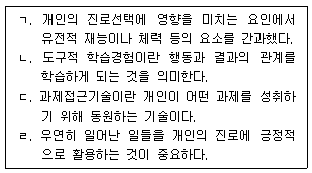
- ㄱ, ㄴ
- ㄴ, ㄷ
- ㄱ, ㄷ, ㄹ
- ㄴ, ㄷ, ㄹ
- ㄱ, ㄴ, ㄷ, ㄹ
(정답률: 28%)
16. 진로상담에서 직업정보를 활용하는 목적에 해당하는 것을 모두 고른 것은?
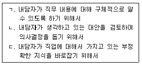
- ㄴ
- ㄱ, ㄴ
- ㄱ, ㄷ
- ㄴ, ㄷ
- ㄱ, ㄴ, ㄷ
(정답률: 29%)
17. 진로상담에서 진로가계도(genogram) 사용에 관한 설명으로 옳은 것은?
- 가족의 맥락 속에서 내담자 이해를 촉진시켜주는 표준화된 평가 도구이다.
- 내담자에게 의미 있는 또래집단의 흥미를 탐색한다.
- 내담자 가족의 지배적인 직업가치를 확인하기 위해 사용할 수 있다.
- 진로가계도는 그리는 것에 의미가 있으므로, 따로 가계도를 분석하지는 않는다.
- 가계도에서 남자는 원, 여자는 사각형으로 표시한다.
(정답률: 36%)
18. 진로상담에서 심리검사 사용에 관한 설명으로 옳은 것을 모두 고른 것은?
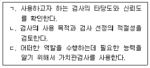
- ㄴ
- ㄱ, ㄴ
- ㄱ, ㄷ
- ㄴ, ㄷ
- ㄱ, ㄴ, ㄷ
(정답률: 39%)
19. 진로상담 과정에서 저항과 관련된 설명으로 옳은 것은?
- 진로상담 장면에서는 내담자의 저항이 거의 나타나지 않는다.
- 상담자는 내담자의 저항을 인지하면 다른 상담자에게 의뢰해야 한다.
- 상담자가 내담자의 저항에 관심을 기울이기보다 저항을 무시함으로써 상담과정에 더욱 집중할 수 있다.
- 캐버나(M. Cavanagh)는 저항적인 내담자에게 대처하기 위하여 ‘불가능한 요구사항을 설정하기’기법을 제안하였다.
- 가이스버스 등(Gysbers et al.)은 내담자가 자신의 진로선택에 책임지지 않으려고 결정을 미루는 것도 저항으로 보았다.
(정답률: 36%)
20. 경영학과 진학을 권유받은 윤기(고2, 남)는 경영학과가 자신에게 맞는지 알고 싶어서 워크넷에 들어가 청소년 직업흥미검사를 받아보았다. <보기>에 나타난 윤기의 검사 결과와 직업흥미검사에 관한 설명으로 옳지 않은 것은?
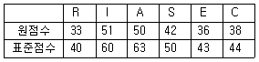
- 윤기의 첫 번째 흥미 유형은 A형이다.
- I형에는 과학자, 인류학자 등이 속한다.
- 윤기의 진로코드에서 일관성은 높다.
- A형은 창의적이고 심미적인 활동을 선호한다.
- 윤기가 진학을 권유받은 학과와 직업흥미검사의 결과는 일치성이 높다.
(정답률: 37%)
21. 윌리암슨(E. Williamson)의 진로상담 과정을 순서대로 연결한 것은?
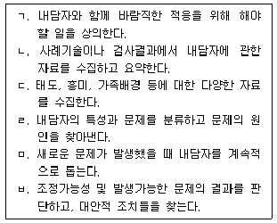
- ㄱ - ㄴ - ㄷ - ㄹ - ㅁ - ㅂ
- ㄷ - ㄴ - ㄱ - ㄹ - ㅁ - ㅂ
- ㄷ - ㄴ - ㄹ - ㅂ - ㄱ - ㅁ
- ㄹ - ㄱ - ㄷ - ㅂ - ㄴ - ㅁ
- ㄹ - ㄷ - ㄴ - ㅂ - ㄱ - ㅁ
(정답률: 알수없음)
22. 진로상담에서 다음과 같은 상담자 질문을 활용하는 기법은?
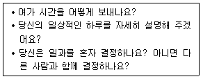
- 유도된 환상 기법(Guided Fantasy Techniques)
- 진로 역할극(Career Role Play)
- 생애진로무지개(Life Career Rainbow)
- 사다리 기법(Laddering Techniques)
- 생애진로사정(Life Career Assessment)
(정답률: 47%)
23. 다문화 진로상담을 진행할 때 상담자의 태도로 옳지 않은 것은?
- 상담을 통해 환경을 변화시킬 수 없으므로, 내담자의 문화적 환경은 제외하고 내담자 개인의 특성 파악에 주력한다.
- 내담자를 진단할 때 내담자의 문화적 특성을 신중하게 고려한다.
- 내담자들이 직면하고 있는 진로장벽을 이해하고자 노력한다.
- 내담자의 가치관이나 문화를 반영한 상담목표를 세우고, 상담방식을 적용한다.
- 내담자의 사회적 지지체계를 탐색하고 구축할 수 있도록 돕는다.
(정답률: 47%)
24. 진로 집단상담에 관한 설명으로 옳지 않은 것은?
- 집단의 응집력이나 구성원간의 상호작용을 중요하게 여기지 않는다.
- 구성원들이 공통적으로 필요로 하는 직업정보를 동시에 제공할 수 있다.
- 일반적으로 폐쇄집단은 개방집단에 비해 집단의 안정성이 높다.
- 집단 초기에 진로상담의 목표와 방향성을 확인한다.
- 진로 집단상담자는 상담이론과 진로이론에 대한 지식을 갖추고 있어야 한다.
(정답률: 50%)
25. 진로상담에서 사용하는 검사에 관한 설명으로 옳은 것은?
- 스트롱(Strong)흥미검사는 홀랜드 유형(RIASEC)을 사용하여 결과를 제공한다.
- 진로사고검사(CTI)는 내적갈등, 우유부단성, 미결정성의 하위척도로 구성되어 있다.
- 직업선호도검사(VPI)는 수퍼(Super)의 이론에 근거해 개발되었다.
- 진로성숙도검사(CMI)는 홀랜드(Holland)의 이론에 근거해 개발되었다.
- 쿠더(Kuder)흥미검사는 총 6개 흥미영역에 대한 결과를 제공한다.
(정답률: 10%)
2과목: 집단상담
26. 집단상담의 특징에 관한 설명으로 옳지 않은 것은?
- 지지적인 분위기에서 집단원들은 새로운 행동을 시도해 볼 수 있다.
- 집단상담자의 지시나 조언이 없어도 집단원들 간 깊은 사회적 교류경험이 가능하다.
- 집단은 사회의 축소판과 유사하므로 집단원들은 다양한 경험을 공유할 수 있다.
- 개인상담에 비해 집단상담은 상담자의 관여와 조절이 더 쉽고 깊어 질 수 있다.
- 문제해결과 목표달성은 집단원들 간의 상호작용과 집단상담자와의 상호작용을 통해 이루어진다.
(정답률: 55%)
27. 집단상담자가 회기를 시작할 때 집단원의 참여를 활성화하기 위한 작업으로 옳지 않은 것은?
- 지난 회기에서 다루었던 주요 내용을 언급하면서 이번 회기의 계획을 말해준다.
- 이번 회기에서 나누고 싶은 이야기를 집단원들이 돌아가면서 한 두 문장 정도로 소개하도록 한다.
- 집단상담에 방해가 되지 않는 범위 내에서 집단의 주제와 관련 있는 뉴스나 날씨 등에 대해 간략히 언급한다.
- 긴급한 질문이나 대답을 요하는 문제가 있다면 시간을 할애해서 다룬다.
- 어떤 집단원의 관심사를 먼저 다룰 것인지 신속히 결정한다.
(정답률: 30%)
28. 집단응집력에 문제가 있을 경우 나타나는 특징을 모두 고른 것은?
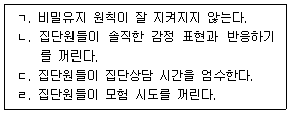
- ㄱ, ㄴ
- ㄷ, ㄹ
- ㄱ, ㄴ, ㄹ
- ㄱ, ㄷ, ㄹ
- ㄱ, ㄴ, ㄷ, ㄹ
(정답률: 47%)
29. 집단상담 과정에서 사용하는 피드백에 대한 설명 중 옳지 않은 것은?
- 집단상담자의 피드백은 집단원들의 피드백보다 수준이 높기 때문에 집단원들이 더 쉽게 받아들인다.
- 부정적인 피드백은 긍정적인 피드백 이후에 하는 것이 더 잘 받아들여진다.
- 피드백을 줄 때 가치판단을 하거나 변화를 강요해서는 안 된다.
- 집단에서 받는 피드백의 영향력은 집단의 발달과정과 관련이 있다.
- 부정적인 피드백을 주기 전에 집단원들의 자기노출 정도를 고려해야 한다.
(정답률: 42%)
30. 집단상담의 한계점에 관한 설명으로 옳지 않은 것은?
- 집단원이 다수이므로 비밀 유지에 어려움이 있다.
- 개인에 대한 관심 정도가 약해질 수 있다.
- 모든 사람에게 집단상담이 효과적인 것은 아니다.
- 개인상담에 비해 경제적으로 비효율적이다.
- 집단 내 압력의 가능성이 있다.
(정답률: 64%)
31. 집단은 초기(시작과 탐색), 중간(작업 또는 생산), 종결(통합)단계의 순서로 발달한다. 집단상담자의 과제를 발달단계별로 옳게 연결한 것은?
- 구조화하기 - 문제행동에 대해 직면시키기 - 이별감정 다루기
- 역기능적 행동패턴 탐색하기 - 목표 설정하기 - 집단원의 성장과 변화 평가하기
- 자기개방과 감정정화 시키기 - 생산적인 대안행동과 실행촉진하기 - 저항 표출하게 하기
- 안전에 대한 신뢰감 형성하기 - 배운 것 실행하게 하기 - 문제행동 직면시키기
- 저항다루기 - 구조화하기 - 목표 설정하기
(정답률: 59%)
32. 집단상담 프로그램 구성과 진행을 위한 작업을 순서대로 나열한 것은?
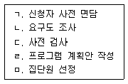
- ㄱ - ㄴ - ㄷ - ㄹ - ㅁ
- ㄱ - ㄷ - ㄴ - ㅁ - ㄹ
- ㄴ - ㄹ - ㄱ - ㅁ - ㄷ
- ㄴ - ㅁ - ㄱ - ㄹ - ㄷ
- ㄹ - ㅁ - ㄱ - ㄴ - ㄷ
(정답률: 39%)
33. 다음의 요건을 모두 충족하는 집단은?
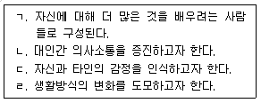
- 치료집단
- 성장집단
- 과업집단
- 교육집단
- 처치집단
(정답률: 58%)
34. 로저스(C. Rogers)가 제안한 참만남 집단과정에 해당하는 것을 모두 고른 것은?
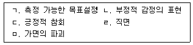
- ㄱ, ㄴ, ㄷ
- ㄱ, ㄷ, ㄹ
- ㄴ, ㄷ, ㅁ
- ㄴ, ㄹ, ㅁ
- ㄱ, ㄴ, ㄷ, ㄹ
(정답률: 20%)
35. 다음 이론에 근거한 집단상담은?
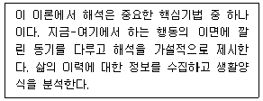
- 정신분석 집단상담
- 아들러식 집단상담
- 실존주의 집단상담
- 게슈탈트 집단상담
- 인간중심 집단상담
(정답률: 42%)
36. 행동주의 집단상담에 관한 설명으로 옳은 것은?
- 긍정적 행동 강화를 위해 토큰경제법을 활용한다.
- 문제행동 분석 및 관리가 상담관계 보다 우선시 된다.
- 목표하는 행동을 단번에 강화함으로써 행동을 조형한다.
- 집단상담자는 집단규범의 구성과 제시에 직접 개입하지 않는다.
- 초기단계에서는 추상적인 삶의 가치를 포함하는 내용으로 행동계약을 한다.
(정답률: 62%)
37. 다음은 어느 이론에 근거한 집단상담자의 진술인가?
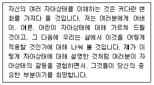
- 해결중심
- 교류분석
- 현실치료
- 게슈탈트
- 인지행동
(정답률: 59%)
38. 집단상담자의 자질과 특성에 관한 설명으로 옳지 않은 것은?
- 개방성: 자신의 경험을 말하며 집단원에게 공감적 이해를 표현한다.
- 용기: 상담자가 진실한 모습으로 집단원과의 상호작용을 감수한다.
- 타인의 복지에 대한 관심: 집단원의 문제를 주도적으로 해결하려고 적극 개입한다.
- 유머: 집단원에게 웃음을 주는 말이나 행동을 함으로써 문제를 새로운 각도에서 조망해 볼 수 있도록 한다.
- 창의성: 집단에서 야기되는 문제를 다룰 때 독창적인 방법과 기술을 활용한다.
(정답률: 47%)
39. 촉진하기에 해당하는 것을 모두 고른 것은?
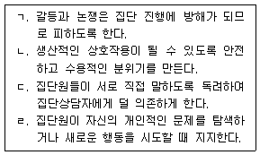
- ㄱ, ㄷ
- ㄴ, ㄹ
- ㄱ, ㄷ, ㄹ
- ㄴ, ㄷ, ㄹ
- ㄱ, ㄴ, ㄷ, ㄹ
(정답률: 43%)
40. 다음 사례에서 집단상담자가 한 기법은?
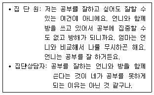
- 직면하기
- 해석하기
- 공감하기
- 명료화하기
- 연결짓기
(정답률: 59%)
41. 침묵하는 집단원(A)에 대한 집단상담자의 작업으로 옳은 것을 모두 고른 것은?
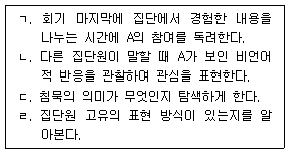
- ㄱ, ㄴ
- ㄴ, ㄷ
- ㄱ, ㄷ, ㄹ
- ㄴ, ㄷ, ㄹ
- ㄱ, ㄴ, ㄷ, ㄹ
(정답률: 39%)
42. 집단원의 문제행동에 관한 집단상담자의 작업으로 옳지 않은 것은?
- 자주 질문하는 집단원: 질문하는 이유와 계기를 살펴보게 한다.
- 조언하는 집단원: 조언하고자 하는 자신의 동기를 살펴보게 한다.
- 독점하는 집단원: 다른 집단원에게 편안함을 주므로 계속 집단을 이끌어 가게 한다.
- 사실적 이야기를 늘어놓는 집단원: 사실적 이야기와 관련된 감정을 현재형으로 표현하게 한다.
- 의존하는 집단원: 의존하는 자신의 태도를 인식하게 한다.
(정답률: 59%)
43. ( )에 들어갈 알맞은 집단상담자의 작업은?
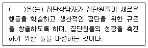
- 직면
- 진단
- 피드백
- 구조화
- 행동형성
(정답률: 54%)
44. 집단상담 진행 시 고려사항으로 옳은 것을 모두 고른 것은?
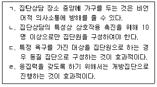
- ㄱ, ㄴ
- ㄱ, ㄷ
- ㄴ, ㄹ
- ㄱ, ㄴ, ㄷ
- ㄴ, ㄷ, ㄹ
(정답률: 67%)
45. 집단원 선정에 관한 설명으로 옳지 않은 것은?
- 집단상담의 목적에 부합하는 욕구를 가진 사람을 선정한다.
- 집단상담 진행에 방해를 초래할 가능성이 있는 사람을 집단원으로 받아 들여야 할 것인지 고려한다.
- 개별 면담을 통한 선정은 시간할애에 어려움이 있으나 효과적인 방법이 될 수 있다.
- 집단상담자와의 이중관계 여부를 파악한다.
- 집단원 선정을 위해서는 투사검사가 필수적이다.
(정답률: 54%)
46. 집단상담 평가에 대해 옳은 것을 모두 고른 것은?
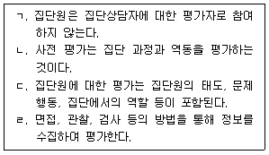
- ㄱ, ㄴ
- ㄴ, ㄷ
- ㄷ, ㄹ
- ㄱ, ㄴ, ㄷ
- ㄴ, ㄷ, ㄹ
(정답률: 47%)
47. 청소년 집단상담의 이점으로 옳지 않은 것은?
- 청소년기 자기중심적 사고에 도전하게 한다.
- 사회기술을 연습할 수 있는 장을 마련해 준다.
- 안전한 환경에서 자유와 독립성을 시도할 수 있게 한다.
- 또래와의 차이점을 발견하여 우월감을 갖게 한다.
- 또래와 함께 참여하면서 성인 상담자의 권위에서 느끼는 불안감이 감소된다.
(정답률: 58%)
48. 현실치료 집단상담에서 사용하는 기법이 아닌 것은?
- 질문
- 유머
- 역설적 기법
- 직면
- 꿈해석
(정답률: 62%)
49. 집단상담의 사전 동의에 포함되어야 할 내용으로 옳지 않은 것은?
- 비밀유지 및 비밀유지의 예외사항
- 집단상담 성과에 대한 보장
- 집단상담자의 이론적 배경
- 특정 집단의 운영을 위해 요구되는 집단상담자의 자격요건
- 집단상담의 잠재적 유익과 위험성에 대한 설명
(정답률: 47%)
50. 청소년 집단상담에서 비밀유지와 관련된 내용으로 옳지 않은 것은?
- 비밀유지에 대해 교육한다.
- 집단과정 중에 비밀유지가 관심사가 되면 회기 중에 이 문제를 다루는 것이 바람직하다.
- 비밀유지와 관련된 다문화적 관점을 존중해야 한다.
- 초등학생 집단원인 경우 부모나 후견인에게 비밀유지의 중요성을 알려주고 협조를 구한다.
- 아동학대가 의심되어도 비밀유지의 원칙은 지켜야 한다.
(정답률: 64%)
3과목: 가족상담
51. 체계론적 가족상담의 특성으로 옳은 것을 모두 고른 것은?
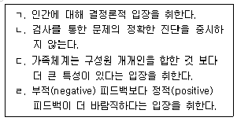
- ㄱ, ㄹ
- ㄴ, ㄷ
- ㄱ, ㄴ, ㄷ
- ㄴ, ㄷ, ㄹ
- ㄱ, ㄴ, ㄷ, ㄹ
(정답률: 8%)
52. 가족상담의 기본 개념에 관한 설명으로 옳지 않은 것은?
- 부부 왜곡(marital skew) - 부부가 서로 역할 교환을 이루지 못함
- 대칭적 관계(symmetrical relationship) - 평등성과 유사성에 기초한 관계임
- 동일결과성(equifinality) - 체계가 여러 방법을 통해 동일한 목표에 도달하는 것임
- 고무울타리(rubber fence) - 고정된 가족역할로부터 벗어나려는 시도를 무시하거나 잘못 해석하여 발달함
- 이중구속(double bind) - 조현병 환자 가족에 관한 연구 결과로서 베이트슨(G. Bateson) 연구진이 발전시킴
(정답률: 알수없음)
53. 후기 가족상담의 이론적 기초에 관한 설명으로 옳지 않은 것은?
- 2차 사이버네틱스를 배경으로 발전하였다.
- 내담자와 상담자의 협력적 관계를 중시한다.
- 문제에 대해 ‘알지 못함(not-knowing)’의 입장을 취한다.
- 체계에 대한 투입과 산출에 초점을 두는 블랙박스 모델이다.
- 사람들이 사회적 상호작용을 통하여 만드는 의미에 초점을 둔다.
(정답률: 30%)
54. 체계론적 가족상담의 초기과정에서 상담자가 해야 할 작업으로 옳지 않은 것은?
- 가족에 합류하기
- 상담의 구조화
- 가족 상호작용패턴 탐색
- 호소문제 탐색 및 명료화
- 전이와 역전이 작업
(정답률: 25%)
55. 가족상담 모델과 주요 기술 또는 목표의 연결로 옳지 않은 것은?
- 경험적 가족상담 - 영향력의 수레바퀴
- 전략적 가족상담 - 문제의 외재화
- 구조적 가족상담 - 가족의 재구조화
- 보웬(M. Bowen)의 가족상담 - 탈삼각화
- 맥락적 가족상담 - 공평한 관계 형성
(정답률: 9%)
56. 가족상담에서 고지된 동의(informed consent)에 관한 설명으로 옳은 것은?
- 상담내용과 구조에 관해 구체적으로 설명하지 않아도 된다.
- 비밀보장의 예외사항은 가족에게 알리지 않음을 고지한다.
- 상담내용을 녹음하는 경우, 내담자의 동의를 구하지 않아도 된다.
- 법원에서 상담내용에 관한 정보를 요구할 때, 내담자에게 사전에 설명하고 동의를 구한다.
- 슈퍼비전을 받으며 상담을 하는 경우에는 내담자의 동의를 구하지 않는다.
(정답률: 8%)
57. 보웬(M. Bowen)의 가족상담에 관한 설명으로 옳은 것을 모두 고른 것은?
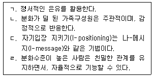
- ㄱ, ㄴ
- ㄱ, ㄷ
- ㄴ, ㄹ
- ㄱ, ㄴ, ㄷ
- ㄴ, ㄷ, ㄹ
(정답률: 알수없음)
58. 다음 상담에서 구조적 가족상담자가 활용한 기법은?
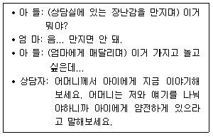
- 합류하기(joining)
- 모방하기(mimicking)
- 추적하기(tracking)
- 균형깨기(unbalancing)
- 실연하기(enacting)
(정답률: 20%)
59. 사티어(V. Satir)의 경험적 가족상담에 관한 설명으로 옳은 것을 모두 고른 것은?
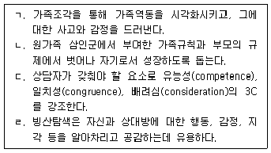
- ㄱ, ㄴ
- ㄴ, ㄷ
- ㄱ, ㄴ, ㄹ
- ㄱ, ㄷ, ㄹ
- ㄱ, ㄴ, ㄷ, ㄹ
(정답률: 19%)
60. 전략적 가족상담의 기법에 관한 설명으로 옳은 것은?
- 중요한 타인의 행동을 관찰하고 유사하게 행동하는 위장기법을 사용한다.
- 역설적 개입을 위해 증상처방이나 고된 체험기법(ordeal technique) 등을 사용한다.
- 정의예식(definitional ceremony)을 통해 자신이 선호하는 정체성을 청중 앞에서 인정받도록 한다.
- ‘변화하라’는 메시지와 ‘변화하지 말라’는 메시지를 동시에 전달하는 치료적 삼각관계 상황을 만든다.
- 긴장고조 기법을 통해 일정한 의식을 만들어 가족게임을 과장되게 인식하도록 한다.
(정답률: 10%)
61. 해결중심 단기 가족상담의 목표 설정 원칙으로 옳지 않은 것은?
- 구체적이고 행동적인 것을 목표로 한다.
- 현실적으로 성취 가능한 것을 목표로 한다.
- 목표 수행은 힘든 일이라는 것을 내담자가 인식하도록 한다.
- 지금 여기에서 시작하는 것을 목표로 한다.
- 상담자가 중요하다고 여기는 것을 목표로 한다.
(정답률: 19%)
62. 다음 이야기치료 상담자의 질문에 해당하는 것은?
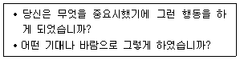
- 외재화(externalization)를 위한 질문
- 외부증인(outside witness) 초대를 위한 질문
- 제지하기(restraining) 위한 질문
- 재저작(reauthoring)을 위한 질문
- 기적(miracle) 질문
(정답률: 알수없음)
63. 다음 구조적 가족지도에 나타난 가족역동에 관한 설명으로 옳지 않은 것은?
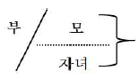
- 모는 자녀와 모호한 경계선을 이루고 있다.
- 부모간의 갈등이 자녀에게 우회되어 있다.
- 부는 자녀와 경직된 경계선을 이루고 있다.
- 부부간에는 상호관계가 단절되어 있다.
- 모-자녀간에는 위계가 형성되어 있다.
(정답률: 알수없음)
64. 보웬(M. Bowen)의 가족상담에서 과정질문(process question)에 관한 설명으로 옳지 않은 것은?
- 상담자는 내담자의 문제에 관한 내용에 초점을 두고 질문한다.
- 가족체계 안에서 자신의 역할을 이해하고 문제의 맥락을 명료하게 사고하도록 한다.
- 감정을 가라앉히고 정서적 반응에 의해 유발된 불안을 낮추도록 질문한다.
- 부부의 논쟁이 심할 경우, 상담자는 중립적 태도로 각자의 생각에 초점을 맞추도록 한다.
- 가족원이 문제를 어떻게 지각하고 관계유형에 어떤 방식으로 참여하였는지 질문한다.
(정답률: 9%)
65. 다음 가족상담 장면에서 상담자가 시도하고 있는 개입 기법은?
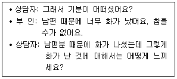
- 공명
- 유지
- 재정의
- 빙산탐색
- 환기적 경청
(정답률: 9%)
66. 전략적 가족상담에 관한 설명으로 옳은 것을 모두 고른 것은?
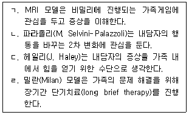
- ㄱ, ㄴ
- ㄴ, ㄷ
- ㄷ, ㄹ
- ㄱ, ㄴ, ㄷ
- ㄴ, ㄷ, ㄹ
(정답률: 10%)
67. 해결중심 단기 가족상담에 관한 설명으로 옳은 것을 모두 고른 것은?
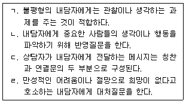
- ㄱ, ㄷ
- ㄱ, ㄹ
- ㄴ, ㄷ
- ㄱ, ㄴ, ㄷ
- ㄴ, ㄷ, ㄹ
(정답률: 알수없음)
68. 이야기 치료의 기본 전제에 관한 설명으로 옳은 것을 모두 고른 것은?
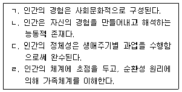
- ㄱ, ㄴ
- ㄱ, ㄹ
- ㄱ, ㄴ, ㄷ
- ㄱ, ㄷ, ㄹ
- ㄴ, ㄷ, ㄹ
(정답률: 0%)
69. 다음에서 가족상담자가 사용한 기법은?
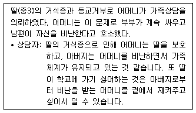
- 행동 형성(behavior shaping)
- 증상 처방(symptom prescription)
- 긍정적 의미부여(positive connotation)
- 보이지 않는 충성심(invisible loyalty)
- 치료적 삼각관계(therapeutic triangulation)
(정답률: 0%)
70. 다음의 각 ( )에 들어갈 용어들을 옳게 연결한 것은?
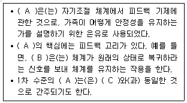
- A: 사이버네틱스, B: 부적 피드백, C: 일반체계이론
- A: 일반체계이론, B: 부적 피드백, C: 전체성
- A: 일반체계이론, B: 정적 피드백, C: 사이버네틱스
- A: 일반체계이론, B: 부적 피드백, C: 상보성
- A: 사이버네틱스, B: 정적 피드백, C: 순환성
(정답률: 19%)
71. 다음 가계도에서 IP(Identified Patient)의 가족역동에 관한 설명으로 옳지 않은 것은?
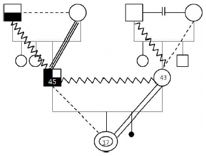
- IP는 외동이다.
- IP의 부와 친조부는 갈등관계이다.
- IP의 부와 친조모는 융합관계이다.
- IP의 외조부모는 이혼하였다.
- IP 부계 쪽으로는 알코올 문제가 세대 간 전수되고 있다.
(정답률: 0%)
72. 민수(중2)가 분노조절을 잘 못하고 집에서나 또래들에게 폭력을 행사하는 일이 많아서 걱정이 된다고 어머니가 호소하였다. 이 사례에 대한 가족상담 모델과 개입의 연결로 옳지 않은 것은?
- 보웬(M. Bowen)의 가족상담 - 민수의 형제 하위체계 기능을 탐색한다.
- 밀란(Milan) 모델 - 민수의 문제에 대해 가설설정과 순환질문으로 접근한다.
- 이야기 치료 - 민수가 지향하는 삶의 목적과 희망에 대해 질문한다.
- 사티어(V. Satir)의 경험적 가족상담 - 민수의 자존감과 가족의 규칙에 대해 탐색한다.
- 해결중심 단기 가족상담 - 민수가 폭력을 행사하지 않을 때에는 무슨 일을 하는지 탐색한다.
(정답률: 알수없음)
73. 가족상담에서 가족생활주기에 관한 설명으로 옳지 않은 것은?
- 수평적 스트레스원으로는 진학, 취업, 결혼 등이 있다.
- 청소년기 자녀를 둔 가족은 자녀의 가족체계 내외 출입이 자유롭도록 부모자녀관계가 변화해야 한다.
- 듀발(E. Duvall)과 힐(R. Hill)은 가족생활주기 각 단계별 발달과업을 중요하게 본다.
- 자녀출산기에는 자녀의 출생으로 기쁨과 함께 긴장과 어려움이 따른다.
- 카터(B. Carter)와 맥골드릭(M. McGoldrick)의 가족생활주기 단계는 결혼으로부터 시작된다.
(정답률: 0%)
74. 10세 아들을 두고 있는 박씨 부부가 지난 5년간 지속된 부부간의 갈등을 해결하고자 가족 상담을 의뢰하였다. 이 사례에 대한 가족상담 모델과 개입의 연결로 옳지 않은 것은?
- 사티어(V. Satir)의 경험적 가족상담 - 부부의 의사소통 유형을 파악한다.
- 해결중심 단기 가족상담 - 부부의 강점과 자원에 초점을 두고 접근한다.
- 헤일리(J. Haley)의 전략적 가족상담 - 부부의 관계윤리 측면을 살펴본다.
- 보웬(M. Bowen)의 가족상담 - 부모와 아들이 삼각관계를 형성하고 있는지 살펴본다.
- 미누친(S. Minuchin)의 구조적 가족상담 - 부부 하위체계의 기능을 부모 하위체계와 분리하여 살펴본다.
(정답률: 10%)
75. 우울감이 있는 영희(중1)는 어머니와 갈등이 심하다. 영희가 초등학교 3학년 때 부모가 이혼하였고, 이후 어머니와 외할머니와 함께 살았는데 6개월 전 외할머니가 돌아가셨다. 영희는 아버지와 한 달에 한 번 정도 만나 왔다. 이 가족의 사례에 대한 체계론적 가족상담 개입 계획으로 옳은 것을 모두 고른 것은?
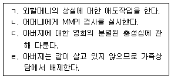
- ㄱ, ㄴ
- ㄱ, ㄷ
- ㄴ, ㄷ
- ㄷ, ㄹ
- ㄱ, ㄴ, ㄷ
(정답률: 10%)
4과목: 학업상담
76. 토마스와 로빈슨(Thomas & Robinson)의 PQ4R의 단계에 해당하는 것을 모두 고른 것은?
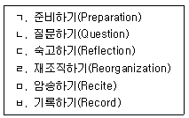
- ㄱ, ㄴ, ㄹ
- ㄱ, ㄷ, ㄹ
- ㄴ, ㄷ, ㅁ
- ㄴ, ㄷ, ㄹ, ㅁ
- ㄴ, ㄷ, ㅁ, ㅂ
(정답률: 0%)
77. DSM-5에서 제시한 특정학습장애의 진단기준에 관한 설명으로 옳은 것을 모두 고른 것은?
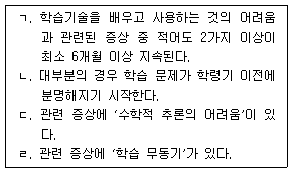
- ㄱ
- ㄷ
- ㄱ, ㄷ
- ㄴ, ㄷ
- ㄴ, ㄹ
(정답률: 알수없음)
78. 맥키치 등(J. McKeachie et al.)의 학습전략 분류 중 인지전략(cognitive strategy)에 해당하지 않는 것은?
- 학습목표를 설정하고 목차를 살펴본다.
- 학습내용을 요약하거나 도표를 그려본다.
- 핵심개념을 자기말로 바꾸어본다.
- 새로운 개념을 학습할 때 구체적인 예를 떠올려본다.
- 학습내용을 검토하여 핵심 아이디어를 선택해본다.
(정답률: 알수없음)
79. 다음은 자율성을 기준으로 발레란드와 비소네트(Vallerand & Bissonnette)가 구분한 학습동기 단계의 일부이다. 자율성이 낮은 순서부터 옳게 나열한 것은?
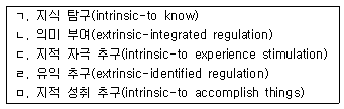
- ㄴ - ㄹ - ㄱ - ㄷ - ㅁ
- ㄴ - ㄹ - ㄱ - ㅁ - ㄷ
- ㄹ - ㄴ - ㄱ - ㄷ - ㅁ
- ㄹ - ㄴ - ㄱ - ㅁ - ㄷ
- ㄹ - ㄴ - ㅁ - ㄱ - ㄷ
(정답률: 24%)
80. 리버트와 모리스(Liebert & Morris)가 제안한 시험불안의 인지적 측면인 걱정(worry) 요인에 해당하지 않는 것은?
- 시험 준비 부족에 대한 염려
- 긴장으로 인한 일시적인 기억력 감소
- 시험 결과에 대한 염려
- 다른 사람들과의 비교의식
- 시험에 대한 지속적인 걱정
(정답률: 알수없음)
81. 길포드(J. Guilford)가 제시한 창의적 사고의 구성요인에 관한 설명으로 옳은 것은?
- 독창성은 고정적인 사고에서 벗어나 여러 각도에서 해결책을 찾아내는 능력이다.
- 인내심은 자신의 경험에 제한받지 않고 모든 가능성을 수용하는 능력이다.
- 유연성은 기존의 아이디어와 다른 새롭고 독특한 아이디어를 산출하는 능력이다.
- 정교성은 기존 아이디어를 추상적이고 확산적인 아이디어로 발전시키는 능력이다.
- 유창성은 특정한 문제상황에서 가능한 많은 양의 아이디어를 산출하는 능력이다.
(정답률: 19%)
82. 발표불안에 관한 개입 방안으로 옳은 것을 모두 고른 것은?
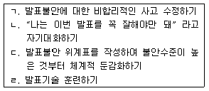
- ㄱ, ㄴ
- ㄱ, ㄹ
- ㄴ, ㄹ
- ㄱ, ㄴ, ㄷ
- ㄱ, ㄷ, ㄹ
(정답률: 19%)
83. 기어리(D. Geary)가 제시한 수학학습장애의 유형에 해당하는 것은?
- 단순 연산의 인출과 장기기억화의 어려움을 겪는 유형
- 시험불안을 동반한 유형
- 수학에 대한 심리적 두려움을 겪는 유형
- 시각적 정보의 시공간적 표상에 어려움을 겪는 유형
- 쓰기장애가 공존하는 유형
(정답률: 알수없음)
84. 행동변화를 용이하게 하는 목표의 특징으로 로크와 라뎀(Locke & Latham)이 제시한 것을 모두 고른 것은?
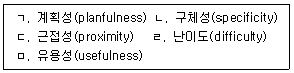
- ㄱ, ㄷ
- ㄴ, ㄹ
- ㄱ, ㄴ, ㄹ
- ㄴ, ㄷ, ㄹ
- ㄴ, ㄷ, ㅁ
(정답률: 10%)
85. 학습동기와 관련된 설명으로 옳지 않은 것은?
- 행동주의적 관점에서 학습동기는 강화와 처벌에 의해 조절될 수 있다.
- 학업적 자기효능감이 높아지면 학습동기 향상에 도움이 된다.
- 매슬로우(A. Maslow)의 욕구위계 모형에서 지적인 욕구는 성장욕구에 속한다.
- 내적 동기화는 학습동기와 무관하다.
- 학습된 무기력(learned helplessness)은 변화 가능하다.
(정답률: 20%)
86. 학습과 수면에 관한 설명으로 옳지 않은 것은?
- 불을 켜고 자면 멜라토닌 분비가 억제되어 숙면을 방해할 수 있다.
- 자신에게 적절한 수면시간을 찾아 규칙적으로 수면을 취하는 것은 학습효과를 높이는데 도움이 될 수 있다.
- 학습 후 3시간 이내에 잠을 자는 것은 학습내용 기억을 저하시킨다.
- 가벼운 운동 후 따뜻한 물로 샤워하면 숙면에 도움이 될 수 있다.
- 낮잠을 2시간 이상 자는 것은 신체 리듬에 방해가 될 수 있다.
(정답률: 10%)
87. 데시와 라이언(Deci & Ryan)의 자기결정성 이론에서 제시한 동기에 관한 설명으로 옳은 것은?
- 무동기(amotivation)는 특정행동에 대해 무조건적인 관심을 갖는 상태이다.
- 통합된 조절(integrated regulation)은 특정행동의 가치를 받아들이지 못하지만 내적 흥미가 있는 상태이다.
- 부과된 조절(introjected regulation)은 타인의 정서적 반응과 관계없이 과제수행을 거부하는 상태이다.
- 확인된 조절(identified regulation)은 타인의 요구를 확인하고 불가피하게 과제수행을 하는 상태이다.
- 내적 동기(intrinsic motivation)는 행동 자체만으로도 흥미와 즐거움을 가진 상태이다.
(정답률: 28%)
88. 학업성취 결정 요인 중 개인 내적이면서 변화 가능한 요인에 해당하는 것을 모두 고른 것은?
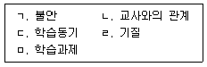
- ㄱ, ㄷ
- ㄱ, ㄷ, ㅁ
- ㄴ, ㄷ, ㄹ
- ㄴ, ㄹ, ㅁ
- ㄴ, ㄷ, ㄹ, ㅁ
(정답률: 알수없음)
89. 댄서로우(D. Dansereau)가 제시한 학습전략 중 주전략에 해당하는 것을 모두 고른 것은?
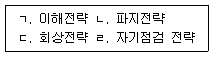
- ㄱ, ㄴ
- ㄱ, ㄹ
- ㄱ, ㄴ, ㄷ
- ㄱ, ㄷ, ㄹ
- ㄴ, ㄷ, ㄹ
(정답률: 10%)
90. 낮은 학업성취를 보이는 영재 청소년의 특성에 관한 설명으로 옳지 않은 것은?
- 학습과제 실패에 대한 지각은 높고 성공에 대한 지각은 낮은 경향이 있다.
- 완벽주의로 고통을 받기도 한다.
- 주변의 과도하게 높은 성취기대 때문에 학습관련 효능감에 부정적인 영향을 받기도 한다.
- 자아존중감이 낮아져 자신의 능력을 신뢰하지 못하기도 한다.
- 학습과제에 성공한 경우에도 과제난이도보다는 자신의 능력에 더 귀인하는 경향이 있다.
(정답률: 19%)
91. 학업상담에서 활용될 수 있는 심리검사에 관한 설명으로 옳은 것을 모두 고른 것은?
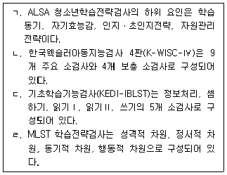
- ㄱ, ㄴ
- ㄴ, ㄷ
- ㄱ, ㄴ, ㄹ
- ㄱ, ㄷ, ㄹ
- ㄴ, ㄷ, ㄹ
(정답률: 알수없음)
92. 와이너(B. Weiner)가 제시한 귀인의 차원에 관한 설명으로 옳은 것은?
- 통제소재(locus of control)는 성공과 실패의 원인을 학습자가 정확히 이해하는지를 기준으로 분류한다.
- 안정성(stability)은 성공과 실패의 원인이 시간이나 상황에 따라 쉽게 변하는지 여부와 관련된다.
- 통제가능성(controllability)은 성공과 실패의 원인이 학습자 내적 원인인지 또는 외적 원인인지를 기준으로 분류한다.
- 학습자가 낮은 시험점수의 원인을 운으로 본다면, 이는 안정적 요인에 귀인한 것이다.
- 학업성취에 가장 영향력이 큰 내적 귀인 요소는 과제난이도이다.
(정답률: 알수없음)
93. 학업상담에서 지능에 관한 설명으로 옳지 않은 것은?
- 지능은 학업성취도와 관련이 있는 변인이다.
- 학습에 대한 지능의 영향력을 과대평가하는 것은 경계해야 한다.
- 상담자는 내담자의 지능을 객관적으로 이해할 필요가 있다.
- 지능에 대한 학습자의 인식은 학습태도에 영향을 준다.
- 비네(Binet) 지능검사를 통해 언어성 지능지수와 동작성 지능지수를 산출할 수 있다.
(정답률: 19%)
94. 보기에 제시된 철이의 경험 중 행동주의의 조작적 조건화에서 말하는 후속자극에 해당하는 것은?
- 중학교에 입학함
- 어려운 문장을 발견함
- 국어교과서에 밑줄을 그어가며 예습함
- 선생님께 꾸중을 들음
- 국어공부가 싫어짐
(정답률: 25%)
95. 반두라(A. Bandura)가 제시한 자기효능감의 주요 원천에 해당하는 것을 모두 고른 것은?
- ㄱ, ㄴ, ㄷ
- ㄷ, ㄹ, ㅂ
- ㄱ, ㄴ, ㄹ, ㅁ
- ㄱ, ㄴ, ㄹ, ㅂ
- ㄴ, ㄷ, ㄹ, ㅁ
(정답률: 30%)
96. DSM-5에서 제시한 주의력결핍 과잉행동장애(ADHD)에 관한 설명으로 옳지 않은 것은?
- 부주의 증상은 학업적 결함과 또래들의 무시와도 연관이 있다.
- 과잉행동은 적절치 않은 상황에서 과도한 운동 활동이나 과도하게 꼼지락거리는 것과도 연관이 있다.
- 부주의는 과제를 수행하지 않고 돌아다니기, 지속적인 집중의 어려움과 같은 모습으로도 발현되며, 이는 이해의 부족이나 반항에서 기인한 것이다.
- 학습과제, 연필, 책 등 과제와 활동에 필요한 물건들을 자주 잃어버리는 것은 ADHD 진단에 포함되는 증상 중 하나이다.
- ADHD에 진단적인 생물학적 표지자는 없다.
(정답률: 0%)
97. 수학학습부진 학생 상담 시 ‘247 곱하기 8’과 같은 셈하기에서 다음과 같이 계산하는 내담자의 오류에 대한 분석으로 옳은 것은?
- 7 × 8에서 오류
- 일의 자리 계산 후 받아올림을 하지 않음
- 자릿수 맞추기 실패
- 받아올린 수를 정확하게 더하지 못함
- 십의 자리의 4를 40으로 이해하지 못함
(정답률: 10%)
98. 선수학습과 학업성취에 관한 설명으로 옳은 것은?
- 선수학습 결손은 해당 학년의 교과학습에 어려움을 초래할 수 있다.
- 선수학습 결손은 해당 교과를 과하게 학습했기 때문에 발생한다.
- 수학처럼 위계성이 높은 과목일수록 선수학습 결손이 학업성취에 미치는 영향은 낮아진다.
- 상급학교로 갈수록 선수학습의 중요성은 낮아진다.
- 선수학습 결손으로 인한 학업미성취는 정서적 문제가 주원인이다.
(정답률: 34%)
99. 주의집중력 향상을 위한 개입전략으로 옳은 것을 모두 고른 것은?
- ㄱ, ㄴ
- ㄱ, ㄷ
- ㄱ, ㄴ, ㄷ
- ㄱ, ㄷ, ㄹ
- ㄴ, ㄷ, ㄹ
(정답률: 47%)
100. 학습을 위한 시간관리 전략으로 적절한 것을 모두 고른 것은?
- ㄱ, ㄴ, ㄷ
- ㄱ, ㄴ, ㄹ
- ㄱ, ㄷ, ㄹ
- ㄴ, ㄷ, ㄹ
- ㄱ, ㄴ, ㄷ, ㄹ
(정답률: 25%)
상담자의 활동은 "상담자의 역할과 윤리"와 "상담 기술"로 구성되어 있습니다. 이는 상담자가 진로상담을 할 때 필요한 역량과 기술을 습득하고, 상담 과정에서 윤리적인 문제를 고려하여 적절한 상담을 제공할 수 있도록 돕는 것입니다.
진로상담의 목표는 "진로 탐색과 진로 선택"으로 구성되어 있습니다. 이는 상담 대상자가 자신의 관심, 성향, 능력 등을 파악하고, 이를 기반으로 적합한 진로를 선택할 수 있도록 돕는 것입니다.
따라서, 상담자의 활동과 진로상담의 목표는 바르게 연결되어 있습니다. 상담자의 역할과 윤리, 상담 기술을 습득하고 적용함으로써 상담 대상자가 자신의 관심과 능력을 파악하고 적합한 진로를 선택할 수 있도록 돕는 것이 진로상담의 목표입니다.